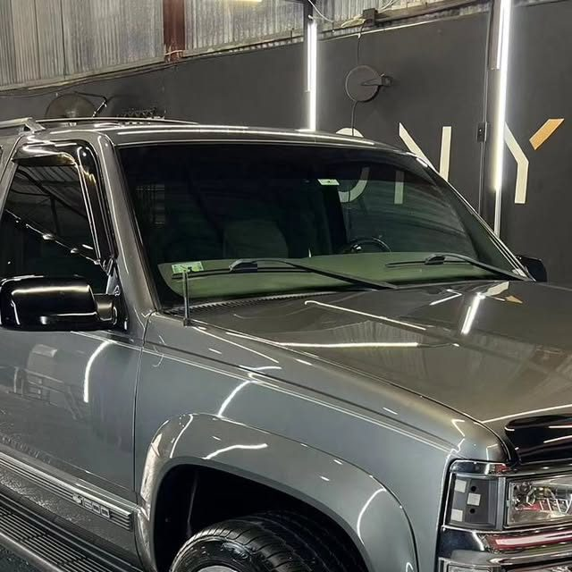

Corrección y restauración de pintura
Pulido por etapas para eliminar swirls, rayones y oxidación. Nuestra especialidad.

PLANO Nº 001 — AGUADILLA, PUERTO RICO
Especialistas en corrección y restauración de pintura. Cerámica, graphene, PPF, tintes y detallado interior y exterior con estándar de laboratorio.
◈ Se trabaja con cita previa ◈ km 120.8 PR-2, Aguadilla
Fotos reales de trabajos hechos en nuestro taller. Toca una foto para verla completa.
Productos de trabajo: Menzerna · Lake Country Pads · Onix Coating
Cada servicio sigue un protocolo medido. Nada improvisado, todo documentado.
Pulido por etapas para eliminar swirls, rayones y oxidación. Nuestra especialidad.
Lavado técnico completo por dentro y por fuera, con atención a cada panel.
Recubrimientos Onix Coating para protección y brillo de larga duración.
Instalación de film de protección de pintura contra impactos y rayones.
Instalación de polarizados con cita previa. Pregunta por opciones disponibles.
Restauramos la claridad de tus focos opacos o amarillentos.
Color y protección para tus calipers, con acabado profesional.
Limpieza profunda de asientos, alfombras y tapicería, incluyendo cuero.
Cinco fases, un solo estándar: que la pintura hable por sí sola.
En GS Auto Care somos especialistas en corrección y restauración de pintura de vehículos: cerámica, graphene, PPF, tintes, pulido de focos y detallado interior con estándar de laboratorio.
Somos capacitadores en la industria de la corrección, protección y restauración de pintura en Puerto Rico: entrenamos a la próxima generación de detailers mientras seguimos perfeccionando nuestro propio estándar.
¿Tienes bote? Pregunta por nuestros servicios para botes y recubrimientos marinos.
Es un proceso de pulido por etapas que elimina swirls, rayones leves, oxidación y marcas, devolviéndole a la pintura su brillo y profundidad original. Es la especialidad de GS Auto Care.
Depende del producto aplicado y del mantenimiento del vehículo. Escríbenos por WhatsApp con el modelo de tu carro y te orientamos sobre la mejor opción para ti.
Sí, trabajamos con cita previa para dedicarle a cada vehículo el tiempo que merece. Coordinamos por WhatsApp al 787-697-0049.
Sí. Instalamos tintes con cita previa y ofrecemos instalación de PPF (film de protección de pintura). Cotiza por WhatsApp.
Sí, pregunta por nuestros servicios para botes y recubrimientos marinos.
En el km 120.8 de la carretera PR-2, en Aguadilla, Puerto Rico.
OFERTA POR TIEMPO LIMITADO — DE MANUPRO PARA GS AUTO CARE
Como esta que estás viendo: con tus fotos reales, tus servicios y botón de WhatsApp. Elige tu plan:
Regular $300
$99
Regular $600
$150
LA MÁS ELEGIDA
Regular $1,000
$200
Precios de oferta por tiempo limitado. Escríbenos y la montamos esta misma semana.